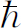

当薛定谔最初发现量子力学的正确定律时，他写出了一个方程，描述在不同地点找到粒子的振幅。这个方程非常像经典物理学家原来就知道的某些方程——这些方程曾被用来描述空气中声波的运动、光的传播以及其他一些现象。在量子力学建立的初期，大部分时间都花在解这个方程上。但在同一个时期，特别是玻恩和狄拉克，发展了对隐藏在量子力学方程式背后的、全新的物理概念的理解。随着量子力学的进一步发展，人们又发现还有许多东西没有直接包含在薛定谔方程里——如电子自旋以及各种相对论现象。传统上所有的量子力学课程都是以同一方式开始的，即顺着这一主题的历史发展顺序讲解。一个人首先得学习大量的经典力学，这样他就会懂得如何去解薛定谔方程。然后，他花很多时间去求各种情况下薛定谔方程的解，只有在详尽地研究了这个方程之后，才接触到电子自旋这个“高深”的课题。
我们原来也曾考虑过，结束这些物理课程的正确方式是给你们讲解怎样去解复杂情况下的经典物理学方程——例如在封闭区域内声波的描述，圆柱形空腔中电磁辐射的模式等等。这是本课程的最初计划。然而，我们还是决定抛弃这个计划而代之以量子力学的导论。我们得到这样的结论：通常认为量子力学的高深部分事实上是十分简单的，这里面所用的数学特别简单，只包含简单的代数运算而且没有微分方程，至多只有一些很简单的微分方程。唯一的问题是，我们必须跃过一个裂隙，这个裂隙是我们不再能够详细 描述粒子在空间的行为。所以，我们想要做的是：给你们讲解通常所谓的量子力学的“高深”部分。但是我们向你们保证，它们是极其简单的部分——从深刻意义上来说——并且也是最基本的部分。坦白地说，这是一个教学法的实验，据我们所知，以前还从来没有这样做过。
当然，在这个课题中，我们的困难是对物体的量子力学行为十分陌生，没有人曾在日常经验中有过有关物体量子力学行为的粗略的、直观的概念。有两种介绍这一课题的方法：我们可以用较为粗略的物理方式来描述可能发生的事件，多少告诉你们发生了一些什么而不给出每一事件的精确定律；或者从另一个角度，给出精确定律的抽象形式。但是，由于抽象，你们就完全不知道它们的物理意义。后一种方法不能令人满意，因为它完全是抽象的，而前一种方法给人不舒服的感觉，因为无法知道究竟哪些东西是真的，哪些是假的。怎样克服这个困难，我们尚无把握。事实上，你们会注意到，在第1和第2章里已经提出了这个问题，第1章是比较精确的，而第2章是对不同现象的特征的粗略描述。在这里，我们将尝试在这两个极端之间找到一种适当的描述方法。
在这一章里我们将首先处理一些普遍的量子力学概念。某些表述是十分精确的，另一些表述只是部分精确。当我们进行讲解的时候，很难向你们指明哪一些表述是十分精确的，哪一些是部分精确的。但是当你们学完这一本书的其余部分以后，再回过头来看一看就会知道哪些部分是严密的，哪些部分只是简略的解释。本章以后的各章将不像本章那样不够精确。事实上，在以后各章里，我们精心力求讲得更精确的理由之一是：要向你们指出量子力学中最美妙的东西之一——从很少的前提推导出很多的结论。
我们还是从讨论概率幅 的叠加开始。我们将用第1章的实验作为例子，并把它重新画在图3-1上。有一个粒子（譬如说电子）源s ：后面是一堵上面有两条狭缝的墙，在墙后面有一个探测器放在某一个位置x 。我们要求在x 处发现粒子的概率。量子力学的第一普适原理 ：粒子从源s 发出到达x 的概率能够用一个叫做概率幅的复数的绝对值的平方来定量地描述——在现在这个例子中，就是“从s 来的粒子到达x 的振幅”。量子力学中经常用到这个振幅，我们用一个速记符号——狄拉克发明并在量子力学中通用的——来描述这个概念。我们用这样的方式来表示概率幅。
图3-1 电子的干涉实验
换言之，两个括号〈〉是与“振幅”相当的记号，竖线右 边的表式总是表示初始 状况，左边的表示终了 状况，为了方便，有时候可以进一步缩写，各用一个字母分别表示初始状况和终了状况。例如，有时我们可以把振幅式（3.1）写成：
我们要强调一下，这个振幅当然只是一个单独的数字——一个复数。
在第1章的讨论中，我们已经看到，粒子到达探测器有两条可能的路径时，总的概率不是两个概率之和，而必须写成两个振幅之和的绝对值的平方。两条路径都畅通的时候，电子到达探测器的概率是：
我们把这个结果用新的符号来表示。不过我们先要讲一讲量子力学第二普适原理 ：当一个粒子可以通过两条可能的路径到达某一给定 的状态时，这个过程的总振幅是，各自独立地考虑的两条路径的振幅之和 ，用新的符号表示：
顺便提一下，我们必须假定小孔1和2是足够地小，当我们谈及电子通过小孔的时候，我们不必讨论通过的是小孔的哪个部分。当然我们可以把每一个小孔分割成许多部分，而电子具有通过小孔的上部或通过小孔的底部或其他部分的一定振幅。我们假定小孔是足够地小，从而就不必为这些细节操心。这就是所涉及的粗糙部分；我们可以使之更为精确，但是在现阶段还不需要那么做。
现在，我们要详细地写出我们对于电子通过小孔1到达位于x 处的探测器这一过程的振幅能说些什么。在这里，我们要应用第三普适原理 ：如果粒子走的是某一特定的路径，对于这条路径的振幅可以写成走过部分路程的振幅以及走过其余部分路程的振幅之乘积。对于图3-1的装置，从s 通过小孔1到达x 的振幅等于从s 到孔1的振幅乘以从孔1到x 的振幅：
这个结果也不是完全精确的。我们还应当在振幅中包含一个关于电子通过小孔1的因子，但是，在目前的情况下，这只是一个简单的小孔，我们可令这个因子等于1。
你们要注意，式（3.5）是以相反的次序写的。它应当从右边读到左边。电子从s 到1，然后从1到x 。总结一下，如果事件是接连发生的——就是说，如果你们能够分析粒子所走的一条路线，说它先走这一段，然后走那一段，再走另一段——则将各相继事件的振幅相乘即可求出该路线的总振幅。运用这个定律，我们可以将式（3.4）重新写成：
现在我们要证明，只要运用这几条原理，我们就能计算如图3-2所示那种更为复杂的问题。在该图中有两堵墙，一堵墙上有两个小孔1和2，另一堵墙上有三个小孔a 、b 和c 。在第二堵墙后面有探测器，位于x 处，我们要求粒子到达这一探测器的振幅。一个你们能求出振幅的方法是计算通过这许多小孔的波的叠加，或干涉；但是你们也可这样来求，认为有6条可能的路线，把走过各条路线的振幅叠加起来。电子可以先通过小孔1，然后通过小孔a ，最后到达x ；或者它可以先通过小孔1，然后通过小孔b ，最后到达x ，如此等等。按照上述第二原理，将各条可供选择的路线的振幅相加。所以我们可以把电子从s 到x 的振幅写成6个单独振幅之和。另一方面，应用第三原理，每一个单独的振幅都能写成三个振幅的乘积。例如，其中有一个是从s 到1的振幅乘以1到a 的振幅再乘以a 到x 的振幅。采用我们的速记符号，从s 到x 整个振幅可写成
可用求和符号来节省书写
图3-2 一个比较复杂的干涉实验
为了用这些方法进行各种计算，自然必须知道从一个地点到另一地点的振幅。我们将给出一个典型振幅的粗略概念，它不考虑像光的偏振和电子自旋之类的东西，但是，除了这些方面之外，它是十分准确的。有了这些概念，你们就能够解决包含多个狭缝的不同组合的问题。假设有一个具有一定能量的粒子，在真空中从位置r 1 走到位置r 2 。换言之，这是一个不受力作用的自由粒子。除了前面还要有一个常数因子外，从r 1 到r 2 的振幅是：
其中r 12 ＝r 2 －r 1 ，p 是动量，它和能量E由相对论方程联系起来：
或者由非相对论性方程式联系起来：
方程式（3.7）实际上表示粒子具有像波一样的性质，振幅就像一个具有波数等于动量除以 的波那样传播。
在最一般的情况下，振幅和相应的概率也包含时间。对于大多数这些初步的计算，我们假设粒子源始终发射具有特定能量的粒子，所以我们不必考虑时间问题，但是在一般的情况下，我们可能对另外一些问题感兴趣。假设有一个粒子在某一时刻，在某一地点P 被释放，而你们想要知道它在某个晚一些的时刻到达某个位置，譬如说在r 的振幅。这可用符号表示成振幅 。显然，这个振幅将依赖于r 和t 。如果你们把探测器放在不同的位置并在不同的时刻进行测量，你们就会得到不同的结果。一般地说，这个r 和t 的函数满足一微分方程，这微分方程是一个波动方程。例如在非相对论的情况中，它就是薛定谔方程。于是人们就得到一个与电磁波或者气体中声波的方程式相类似的波动方程。然而必须强调指出，满足这个方程式的波函数与空间的真实的波动并不相同，我们不能像对声波那样用一种实在的图像来描绘这种波动。
虽然人们在处理一个粒子的问题的时候，很想用“粒子波”这个概念来进行思考，但这并不是一个恰当的概念。因为，如果有两个粒子，那么在r 1 发现一个粒子并且在r 2 发现另一个粒子的振幅并不是一个简单的三维空间的波，而是依赖于6个空间变量r 1 和r 2 。例如，如果我们处理两个（或者更多的）粒子，我们还需要有下面的附加原理：假如有两个不相互作用的粒子，一个粒子做一件事并且 另一个粒子做另一件事的振幅是两个粒子分别做这两件事的两个振幅之乘积。例如，倘若〈a |s 1 〉是粒子1从s 1 到a 的振幅，〈b |s 2 〉是粒子2从s 2 到b 的振幅，则两者一起都发生的振幅是：
还有一个问题要强调，假定在图3-2中，我们不知道粒子到达第一堵墙的小孔1和2之前是从什么地方来的，但是只要知道到达1的振幅和到达2的振幅这两个数据，我们仍旧可以对在墙的后面将会发生些什么（例如到达x 的振幅）作出预言。换言之，由于接连发生的事件振幅相乘这一事实，如式（3.6）所示，你在继续分析时所必须知道的只是两个数字——对这里的特殊情形来说就是〈1|s 〉和〈2|s 〉。有了这两个复数，就足够预言未来的一切了。这就是真正使得量子力学容易的地方。结果在以后的几章里当我们用两个（或少数几个）数字详细地说明初始状态后，我们所要做的就是用它来预言未来。当然，这些数字取决于粒子源的位置，并且可能还取决于仪器的其他细节。但是，这两个数字给定后我们就不再需要知道这些细节。
现在我们要考虑一个在第1章中已经比较详细讨论过的问题。这一次我们将要运用振幅概念的全部光辉成就来向你们说明这些结果是怎样得出的。我们采用与图3-1所示相同的实验，但现在两个小孔后面加上一个光源，如图3-3所示。在第1章里，我们曾经得到下面的有趣结果，如果我们在狭缝 (1) 1后面观察，并且看见光子从该处散射，那么在x 处得到的与这些光子对应的电子的分布和狭缝2关闭着是相同的。曾经在狭缝1或在狭缝2处被“看到”的电子的总分布是单独打开狭缝1或2时的分布之和，并且和关掉小孔后面的光源时的分布完全不同。这个结果至少在我们采用足够短的波长的光线时是正确的。如果波长变长，以致我们无法确定散射过程发生在哪一个小孔附近，电子的分布就变得更像关掉小孔后面的光源时的分布了。
图3-3 确定电子走过哪一个小孔的实验
我们用新的符号和振幅组合原理来仔细考虑一下会出现些什么情形。为使书写简单，我们仍然令φ 1 表示电子通过小孔1到达x 的振幅，即
同样，我们令φ 2 表示电子经小孔2到达探测器的振幅，
这些是没有光源时通过两个小孔到达x 的振幅。现在如果有了光源，我们要问这个问题：电子从s 出发，光子从光源L 发出，最后电子到达x 而光子在狭缝1后面被观察到，这一个过程的振幅是什么？假定我们用一个探测器D 1 来观察狭缝1后面的光子，如图3-3所示，并用一个同样的探测器D 2 来对小孔2后面被散射的光子计数，对于一个光子到达D 1 以及一个电子到达x 的情形，将有一个振幅。对于一个光子到达D 2 以及一个电子到达x 的情形，也有一个振幅。让我们来计算这两个振幅。
虽然我们对计算中所遇到的所有因子还没有正确的数学公式，但通过下面的讨论，你们可以体会出它的精神。首先，电子从电子源跑到小孔1有一个振幅〈1|s 〉。其次，我们可以假设电子在小孔1附近把一个光子散射到探测器D 1 中也有一定的振幅。我们用a 来表示这个振幅。再有，电子从狭缝1跑到位于x 的电子探测器具有振幅〈x |1〉。于是，电子从s 通过狭缝1跑到x 并把一个光子散射到D 1 里面的振幅是：

或者用我们以前用过的符号来表示，它就是a φ 1 。
通过狭缝2的电子将一个光子散射到D 1 中去的情形也具有某个振幅。你们要说：“这是不可能的，如果探测器D 1 只是观测小孔1，光子怎么会散射到D 1 中去呢？”如果波长足够长，就有衍射效应，那就肯定可能。如果仪器做得很好，而且我们用的是短波长的光子，那么光子被通过小孔2的电子散射到探测器1中去的振幅是非常小的。但是为使讨论具有普遍性，我们应该考虑到总有一些这种振幅存在，我们称它为b 。于是，一个电子通过狭缝2并且把一个光子散射到D 1 中去的振幅是：
在x 位置找到电子并在D 1 中发现光子的振幅是上面两项之和，每一项分别对应于电子的一条可能的路线。每一项又由两个因子构成。第一，电子通过一个小孔，第二，光子被这个电子散射到探测器1中，我们有：
对于在另一个探测器D 2 中发现光子的情况，我们可得到类似的表达式。为简单起见，假设系统是对称的，那么a 也就是电子通过小孔2时把光子散射到D 2 中的振幅，b 是电子通过小孔1时把光子散射到D 2 中的振幅，相应的光子进入D 2 而电子到x 的总概率是：
现在我们完成了。我们可以容易地算出不同情况的概率。假定我们想知道在D 1 中有一个计数而同时在x 处收到一个电子的概率，这就是式（3.8）所给出的振幅的绝对值的平方，即|a φ 1 ＋b φ 2 |2 。让我们更仔细地研究一下这个表达式。首先，如果b 等于零——这是我们设计仪器时想要做到的——答案就是|φ 1|2 乘以|a |2 ，即总振幅缩小了因子|a |2 。这就是如果只有一个小孔时所应当得到的概率分布——如图3-4（a）的曲线所示。另一方面，如果波长很长，光子从小孔2后面散射到D 1 中的振幅可能正好和从小孔1散射的情形相同。虽然在a 和b 中可能还分别包含某个相位因子，但是我们可以问一个简单的情况，即两者相位因子相等的情况。如果a 实际上等于b ，那么总概率就成为|φ 1＋φ 2|2 乘以|a |2 ，因为公共因子a 可以提出来。然而，这正好就是完全没有光子的情况下我们所得到的概率分布。所以，在波长很长的情况下——从而光子探测器无效——你们又重新得到原来的显示出干涉效应的分布曲线，如图3-4（b）所示。对于光子探测器部分有效的情况，在大量的φ 1 和少量的φ 2 之间存在着干涉，你将得到如图3-4（c）上所画的那种介于两者之间的分布。不用说，我们求进入D 2 的光子和到达x 的电子的符合计数，我们将会得到同样的结果，如果你们还记得第1章中的讨论，你们可以看出这些结果对第1章里所谈到的过程给出了定量的描述。
图3-4 在图3-3的实验中，对应于进入D
的一个光子，有一个电子到达x
的概率：
（a）对于b
＝0；（b）对于b
＝a
；
（c）对于0＜b
＜a
为使你们避免一个普遍的错误，我们现在要强调说明一个重要的问题。假定你只要知道电子到达x 处的概率而不管 光子是在D 1 还是在D2 中计数，你们是否应把式（3.8）和（3.9）所表示的振幅相加起来呢？不！对于不同的、互相可以区别的终态的振幅 ，你们无论如何都不得把它们相加起来。光子一旦被某个光计数器所接收，只要我们愿意，不需要更多地去扰乱这个系统，我们总是能够确定到底是哪一种情况发生，每个情况的概率完全不依赖于另一情况。再重复一遍，不要把不同的最终 情况的振幅相加，所谓“最终”，指的是我们当时希望知道的概率——就是当实验“结束”的时候。在整个过程结束以前，你们的确对实验中不能区别的 各个不同的过程的振幅求和。在过程的终了，你们或许会说，“不想要观察光子”。要不要对光子进行观察是你们自己的事，但是你们仍然不可以把振幅相加。自然界并不知道你们正在观察什么。无论你们是否费心记录数据，自然界都按照它自身原有的方式发展变化着，所以我们不可以把振幅相加。我们应当先求出所有可能的终态的振幅的平方，然后再把它们加起来。对于一个电子到达x ，同时一个光子到达D 1 或到达D 2 的情形来说，正确的结果是：
下一个例子是这样一个现象，在此现象中我们要比较仔细地分析概率幅的干涉。我们观察中子在晶体上的散射过程。假定我们有一块晶体，它包含大量的原子，原子的中心是原子核。这些原子核作周期性的排列，一束中子从很远的地方射来。我们用指标i 来标记晶体中不同的原子核，i 依次代表一系列的整数，1，2，3，…，N ，N 等于原子的总数。问题是要计算在图3-5所示的装置中，计数器接收中子的概率。对于任意的一个特定的原子i ，中子到达计数器C 的振幅等于中子从源射到原子核i 的振幅乘以在原子核i 上受到散射的振幅a ，再乘以中子从i 到计数器的振幅。我们可将其写成：
图3-5 中子在晶体上的散射
在写这个方程式时，我们已经假定散射振幅a 对于所有的原子都是一样的。这里有大量的、表观上不能区别的路线。这些路线之所以不能区别是因为低能中子从原子核散射的时候不会把原子撞离它在晶体中原来的位置——没有留下散射的“记录”。按照以前的讨论，中子到达C的振幅必须包括式（3.11）对所有原子求和：
因为我们是对在不同空间位置的原子的散射振幅求和，这些振幅有不同的相位，从而得到和我们以前曾经分析过的光在光栅上散射的情况中同样具有特征的干涉图样。
在这样一个中子强度为角度函数的实验里面，确实常常发现中子强度显示出巨大的变化，具有若干尖锐的干涉峰，在这些峰之间则几乎什么也没有——如图3-6（a）所示。然而，对于某几种晶体情况就不是这样的了。伴随着上面所说的干涉峰一起的还有散射到所有方向上的普遍的本底，我们必须试图去理解这个看上去似乎难以理解的原因。原来我们没有考虑中子的一个重要的性质。它具有1/2的自旋，因而它就有两个可能的状态：不是自旋“向上”（譬如说在图3-5中垂直于纸面）就是自旋“向下”。如果晶体中的原子核没有自旋，中子的自旋就没有任何效应。但是，如果晶体的原子核也具有自旋，譬如说自旋为1/2，你们就会观察到上面所讲的模糊的散射本底。这个现象的解释如下。
如果中子的自旋在某一个方向上，并且原子核具有同样方向的自旋，在散射过程中不可能发生自旋方向的改变。如果中子和原子核具有相反的自旋，于是可能发生两种不同的散射过程，其中一个过程中的自旋方向不变；而在另一种过程中自旋的方向互相交换。这个自旋的总和不变的定则和经典定律中的角动量守恒定律相似。如果我们假定所有散射中子的原子核的自旋都按同一方向排列，我们就开始能够理解这一现象。与原子核具有相同自旋的中子受到散射时就得到预期的锐细的干涉分布曲线。对于自旋相反的中子，情况又怎样呢？如果它在散射时不发生自旋方向翻转，那么情况与上述结果没有什么两样，但是如果两者的自旋在散射过程中都翻了一个身，原则上我们就可发现，是在哪一个原子核上进行了散射。因为这是唯一的自旋反转的原子核。既然我们可以说出是在哪一个原子核上发生了散射，其他的原子对此中子又有什么影响呢？当然没有，这一情况就和在单个原子上散射完全一样。
为计入这种效应，式（3.12）的数学表达式必须加以修正，因为在那样的分析过程中我们还没有对状态作完全的描述。让我们从下述条件出发：从中子源来的全部中子都具有向上的自旋，而晶体中的所有原子都具有向下的自旋。首先我们要求的是：到达计数器的中子的自旋都向上并且 晶体中所有原子核的自旋仍旧向下的振幅。这和我们以前的讨论没有不同。我们令a 为散射时自旋不翻转的振幅。那么，在第i 个原子上散射的振幅是：
因为所有原子核的自旋仍旧向下，各个不同的原子核（不同的i 值）无法区别。显然不可能说出是在哪一个原子上发生了散射。对于这样的过程，所有的振幅互相干涉。
然而还有另外的情况，在这种情况下，从S 出发的中子的自旋虽然都是向上的，但探测到有一个中子自旋却是向下的，在晶体中有一个原子核的自旋必定要改变成向上方向——我们说这是第k 个原子。我们又假定对于自旋翻转的每一个原子都具有相同的散射振幅，称为b 。（在实际的晶体中，存在着另一种可能性，就是相反方向的自旋会转移到另外某个原子上，但是让我们只讨论这种过程的概率非常小的晶体。）于是，散射振幅就是：
假如我们要计算发现中子自旋向下以及第k 个原子核自旋向上的概率，它等于这个振幅的绝对值的平方，就是|b |2 乘上|〈C |k 〉〈k |S 〉|2 。第二个因子几乎与第k 个原子在晶体中的位置无关，并且在取这个绝对值的平方时，所有的相位都消失了。从晶体中任意的原子核上发生的自旋翻转的散射概率是：
这就显示出图3-6（b）那样的光滑的分布曲线。
你们或许会争辩：“我不在乎哪个原子向上。”也许你不在乎，但是自然界是知道的。实际上的概率就是我们上面所得出的——没有任何干涉效应。另一方面，如果我们要求进入探测器内的中子自旋向上而所有原子的自旋仍旧向下的概率，那么我们要取下式的绝对值的平方：
因为求和号下面的各项都包含相位因子，它们要互相干涉，于是我们得到锐细的干涉图样。如果我们做实验时，不去观察被检测到的中子的自旋，那么两种情况都可能发生，两种概率就要相加。作为角度的函数的总概率（或计数率）看上去就像图3-6（c）中的曲线那样。
我们来回顾一下这个实验的物理意义。如果你们原则上 能够区别各个不同的终态 （即使你们不愿费心去区别它们），要求出总的最终的概率。先要算出各个状态的概率 （不是振幅），然后把它们相加即得。如果你们甚至在原则上 都不能 区别各个终态，在取绝对值的平方以求出实际的概率之前，必须先对概率幅求和。你们必须特别注意的是：假如仅仅用波动来描写中子的话，你们对向下自旋的中子和向上自旋的中子都会得到同样的散射分布。你们就要说：“波”来自所有的原子并且相互干涉，就像具有同样波长的向上自旋的中子那样。但是我们知道实际情况并不是这样的。所以正如我们以前所讲过的，我们必须小心，不要对空间的波动赋予过多的实在性。它们对于某些问题是有用的，但不是对所有的问题都有用。
图3-6 中子计数率作为角度的函数
（a）对于自旋为零的原子核；（b）自旋翻转的散射概率；（c）对于自旋为1/2的原子核所观察得到的计数率
下面我们要描述显示量子力学的一个美妙结论的实验。这个实验再一次涉及这样的物理过程，一件事能以两种不能区别 的方式发生，因此发生振幅的干涉——在这种情况下它总是正确的。我们将要讨论在比较低的能量下，一个原子核在另一个原子核上的散射。我们先考虑α 粒子（即你们所知道的，氦原子核）轰击，譬如说，氧原子。为使我们对这个反应的分析较为容易起见，我们在质心坐标系中进行观察，在这个坐标系中氧原子核和α 粒子的速度在碰撞以前具有相反方向，在碰撞以后也具有完全相反的方向。参看图3-7（a）。（因为质量不同，速度的大小当然是不同的。）我们还要假定能量是守恒的，并且碰撞的能量足够低，既不发生粒子碎裂，也不会使粒子跃迁到激发态，两个粒子之所以彼此发生偏转，其原因当然是由于两者都带有正电荷，按照经典的说法，当它们靠近擦过时，存在着静电斥力。散射以不同的概率在不同的角度发生。我们要讨论的是这种散射的角度依赖关系。（当然可以按照经典物理学来计算这个关系，因为量子力学对这个问题的解答和经典的结果完全一样。这是量子力学中最意外的巧合之一，对于这一点很难理解，因为除了平方反比定律以外对其他力的情况就不是这样——所以它确实是一种巧合。）
图3-7 在质心系中观察α 粒子在氧原子核上的散射
不同方向的散射概率可以用图3-7（a）所示的实验来进行测量。在位置1的计数器可以设计成只检测α 粒子，在位置2的计数器设计成只检测氧原子核——这第二个探测器仅仅用来作为核对。（在实验室系统中，探测器不会在相反的方向上，但在质心系中，它们在相反的方向上。）我们的实验是测量在不同方向上的散射概率。令f （θ ）为α 粒子散射到放在θ 角度上的探测器中的振幅；那么，|f （θ ）|2 就是我们由实验测得的概率。
我们还可设计另一个实验，其中所用的探测器既能对α 粒子作出反应，也能 对氧原子核作出反应。这样我们就可得到在不需要区别所计数的是哪一种粒子的情况下所发生的过程。当然，假如我们在θ 角的位置上接收到一个氧原子，在相反的位置角度为（π－θ ）上必然会接收到一个α 粒子，如图3-7（b）所示。所以，如果f （θ ）是α 粒子散射到θ 角的振幅，则f （π－θ ）是氧原子散射到θ 角的振幅 (2) 。于是，探测器在位置1接收到某种 粒子的概率是：
注意，这两个状态原则上是可以区别的。即使在这个实验中我们不去 区别这两种状态，但我们是能够区别它们的 。按照以前的讨论，我们必须把概率相加而不是把振幅相加。
上述结果对于许多种靶核都是正确的——α 粒子在氧原子核上的散射，在碳、铍、氢等等原子核上的散射。但是对于α 粒子在α 粒子上的散射，这个结果就不对了 。对于两个粒子完全相同的情况，实验得出的数据与式（3.14）所预言的不一致。例如在90°角的散射概率正好是上述理论所预言的两倍，并且问题不在于这些粒子是不是“氦”原子核。如果靶是He3 ，而入射粒子是α 粒子（He4 ），那么实验结果就和上述理论相符合了。只有当靶是He4 ——其原子核和入射的α 粒子全同时，粒子的散射以其独特的方式随角度变化。
或许你们已能看出对这个现象的解释。使α 粒子进入计数器有两种方式：使轰击的α 粒子以θ 角散射，或者使它散射到（π－θ ）角度上。我们能不能够辨别进入计数器的粒子是轰击粒子还是靶粒子呢？回答是不能。在α 粒子对α 粒子的情况下，这是两个无法区别的粒子。这里我们必须把概率振幅 相加发生干涉，在计数器中找到α 粒子的概率是两个振幅和的平方：
这个结果和式（3.14）完全不同。我们可取角度π /2作为一个例子，因为这很容易计算。对于θ ＝π /2，显然f （θ ）＝f （π－θ ），所以式（3.15）的概率变为|f （π ／2）＋f （π /2）|2 ＝4|f （π /2）|2 。
另一方面，如果它们不发生干涉，式（3.14）的结果只给出2|f （π /2）|2 。所以90°角的散射是我们所预料的两倍。当然，在其他角度结果也是不同的，于是，你们得到了一个不寻常的结论：在粒子是全同的情况下，出现了粒子是可以区别的情况下未曾发生过的某种新的情况。在数学描述中，必须把可选择的各种过程的振幅相加，在这种过程中，粒子只是简单地交换它们扮演的角色，并且存在着干涉。
当我们用电子对电子散射，或者质子对质子散射进行同样类型的实验时，甚至会出现更为错综复杂的情况。此时以上两个结论都不正确！对于这些粒子，我们还必须引进一条新的法则，一个最为独特的法则，这个法则是这样的：当来到某一点的电子的身份和另一个电子的身份互相交换时，在这种情况中新的振幅以相反的相位 与旧的振幅相干涉。这确确实实是干涉，只是带有一个负号。就α 粒子而言，当把α 粒子交换进入计数器时，相干的振幅以正号相干涉。就电子而言，交换干涉的相干振幅以负号相干涉 。除了下面将要谈到的另一细节外，在与图3-8所示相类似的实验中，适合电子的方程为：
对上面的陈述还必须加以限制，因为我们还没有考虑到电子的自旋（α 粒子没有自旋）。可以认为，电子的自旋相对于散射平面来说，不是“向上”就是“向下”。如果实验的能量足够低，由于电荷运动所产生的磁力很小，因而自旋不受到影响。我们假定现在分析的就是这种情况，所以在碰撞的时候，自旋方向不会改变。不管电子具有什么方向的自旋，它总是不变的。你们可以看到，这里有几种可能性。轰击粒子和靶粒子的自旋都向上，或者都向下，或者它们的自旋方向相反。假定两者的自旋都向上，如图3-8所示（或者假定它们的自旋都向下）。反冲粒子的自旋情况也同样，而且这个过程的振幅 等于图3-8（a）和（b）所表示的两种可能过程的振幅之差 。于是在D 1 中探测到电子的概率 由式（3.16）给出。
图3-8 电子对电子的散射。如果来到的这两个电子具有互相平行的自旋，过程（a）和（b）是不能区别的
如果“轰击”粒子的自旋向上而“靶”粒子的自旋向下，进入计数器1的电子自旋可以向上也可以向下。通过对电子自旋的测量，我们就能够说出这个电子是来自轰击粒子束还是来自靶粒子了。这两种可能性表示在图3-9的（a）和（b）中，原则上它们是可以区别的，因而互不干涉——只不过是两者的概率相加。如果原来的自旋方向都反了过来——就是说，左边的自旋向下而右边的自旋向上——同样的论证仍然成立。
图3-9 自旋反平行的两个电子的散射
现在如果我们随意选取电子——例如由钨丝发射的电子是完全非极化的——那么发射的任一特定电子的自旋向上还是向下的机会是50对50。如果我们在实验中不去测量在任何地点电子的自旋，这就是所谓的非极化的实验。这个实验的结果最好用这样的方法来计算：把所有的各种可能性都排列成表，就像我们在表3-1中所做的那样，对各个可以区别的不同情况分别求出它们的概率。总的概率就等于所有各个概率的和。注意，对于非极化粒子束，θ ＝π /2的结果是对互不依赖的粒子按经典理论求出的结果的一半。全同粒子的行为具有许多有趣的结论，我们将在下一章更为详细地讨论它们。
表3-1 非极化的自旋为1/2的粒子的散射
————————————————————
(1) 大约费恩曼在讲课时小孔（hole）和狭缝（slit）常常不分。原书中小孔和狭缝混用。译文照原文翻译，估计读者不会困惑。——译者注
(2) 一般地讲，散射方向当然应该用两个角度来描写，极角φ 以及方位角θ 。那么我们说氧原子核在（θ ，φ ）就是说α 粒子在（π－θ ，φ ＋π ）。然而，对于库仑散射（以及对于其他许多情况），散射振幅不依赖于φ 。于是在θ 方向得到一个氧原子核的振幅和在（π－θ ）方向得到一个α 粒子的振幅是相同的。